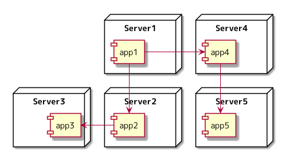

さくらインターネット Advent Calendar 2021 8日目の記事になります。
コンテナオーケストレーションを使うモチベーションを自分なりに考えてみた にて、 Docker を導入するだけでは解決しなかった課題を Nomad と組み合わせることにより解決できそうであるということを説明しました。
今回は、 Docker と Nomad を組み合わせるだけでは解決できていないことに対して必要になってくる技術について、 従来のシステム連携がどのようになっているかという話と絡めながら説明します。
Nomad を使うことで、 Docker を実行できるサーバーを沢山並べてアプリケーションを実行できるようになり、 アプリケーションとサーバーが密に結合しなくなりました。 Docker で動くアプリケーションが、どの Nomad Client で起動するのかは、 Nomad Server が管理しているため、人間にはコントロールできません。
アプリケーションは、他のアプリケーションと連携するというパターンが大部分を占めるのではないかと思います。 どこかの Nomad Client でアプリケーションが起動しているという状態で、 どのようにしてアプリケーションにアクセスすればよいでしょうか。
従来のシステム連携
Nomad Client で起動しているアプリケーションにどのようにアクセスするのかの手段を説明する前に、 従来のシステム連携がどうであるかについて、以下の観点から考えてみます。
- アプリケーションへの接続
- 依存関係
アプリケーションが連携している例になります。

アプリケーションへの接続
サーバーに割り当たっている IP アドレスからアプリケーションに接続するというやり方が考えられます。
IP アドレス以外の方法としては、 DNS を使いサーバーに割り当たっている IP アドレスに名前を付け、 アプリケーションに接続するというやり方が考えられます。
どちらのやり方の場合も、サーバーに割り当てられている IP アドレス、 名前からアプリケーションに接続するという構図になっているのではないかと思います。
システム連携の主体は、アプリケーションではなく、サーバーにあるように見えます。
依存関係
IP アドレス、 DNS などアプリケーションへの接続は、サーバーに紐付いている情報に依存しており、 アプリケーションに接続するというよりは、あるサーバー上で動いているアプリケーションに接続するという依存関係になっているように見えます。
従来のやり方でアプリケーションに接続できるか
どれからの Nomad Client でアプリケーションが起動しているという状況にて、 従来のシステム連携のやり方が通用するのかについて考えてみます。
IP アドレスで、アプリケーションに接続する
どの Nomad Client で何のアプリケーションが実行されるかは Nomad Server が決めます。 IP アドレスで接続したとしても、次の瞬間には別の Nomad Client でアプリケーションが実行されている可能性があるため、 IP アドレスで、アプリケーションに接続することは難しいように思います。
DNS で、アプリケーションに接続する
アプリケーションが起動しているサーバーの IP アドレスを DNS に登録したとしても、 次の瞬間には別の Nomad Client でアプリケーションが実行されている可能性があるため、 DNS で、アプリケーションに接続することは難しいように思います。
どういったものが必要か
従来のシステム連携は、アプリケーションを指しているわけではなく、サーバーを指していると考えます。
Nomad Client で起動するアプリケーションに接続するためには、 サーバーではなく、アプリケーションを名前解決する仕組みが必要なのではないかと考えました。
言うなれば「このサーバーには、このアプリケーションが存在する」ではなく、 「このアプリケーションは、このサーバーに存在する」という名前解決をする仕組みが必要になるのでないかと考えます。
Consul を使えば実現できる
Nomad に Consul というソフトウェアを組み合わせると、 「このアプリケーションは、このサーバーに存在する」という名前解決を実現できます。
アーキテクチャ

Consul には様々な機能がありますが、ここでは「このアプリケーションは、このサーバーに存在する」という名前解決ができるという部分のみを説明します。 Consul についての詳細な内容は、他の方が書かれている記事や公式ドキュメントにお任せしたいと思います。
Nomad と Consul を組み合わせると、 Nomad Client でアプリケーションが起動すると、 Nomad が Consul に、どのアプリケーションが、どのサーバーで起動したかという情報を登録します。
https://www.nomadproject.io/docs/job-specification/service
Consul に登録されている情報は、 Consul の持つ DNS Interface や HTTP API にて参照できるようになっています。
DNS Interface
https://www.consul.io/docs/discovery/dns
cerebro というアプリケーションが起動している Nomad Client の IP アドレスが返ってきている例
root@nomad-client01-dev:~# dig -p 8600 @127.0.0.1 cerebro.service.consul
; <<>> DiG 9.16.22-Debian <<>> -p 8600 @127.0.0.1 cerebro.service.consul
; (1 server found)
;; global options: +cmd
;; Got answer:
;; ->>HEADER<<- opcode: QUERY, status: NOERROR, id: 61227
;; flags: qr aa rd; QUERY: 1, ANSWER: 2, AUTHORITY: 0, ADDITIONAL: 1
;; WARNING: recursion requested but not available
;; OPT PSEUDOSECTION:
; EDNS: version: 0, flags:; udp: 4096
;; QUESTION SECTION:
;cerebro.service.consul. IN A
;; ANSWER SECTION:
cerebro.service.consul. 0 IN A 192.168.10.107
cerebro.service.consul. 0 IN A 192.168.10.108
;; Query time: 4 msec
;; SERVER: 127.0.0.1#8600(127.0.0.1)
;; WHEN: Tue Dec 07 22:59:21 JST 2021
;; MSG SIZE rcvd: 83
root@nomad-client01-dev:~#
HTTP API
https://www.consul.io/api/catalog.html
cerebro というアプリケーションが起動している Nomad Client の IP アドレスが返ってきている例
$ curl 192.168.10.107:8500/v1/catalog/service/cerebro | jq .
% Total % Received % Xferd Average Speed Time Time Time Current
Dload Upload Total Spent Left Speed
100 1869 100 1869 0 0 21988 0 --:--:-- --:--:-- --:--:-- 21988
[
{
"ID": "c0654a60-5722-2a8b-9010-026180f5253e",
"Node": "nomad-client01-dev",
"Address": "192.168.10.107",
"Datacenter": "dc1",
"TaggedAddresses": {
"lan": "192.168.10.107",
"lan_ipv4": "192.168.10.107",
"wan": "192.168.10.107",
"wan_ipv4": "192.168.10.107"
},
"NodeMeta": {
"consul-network-segment": ""
},
"ServiceKind": "",
"ServiceID": "_nomad-task-2e81934f-3fd7-1fd6-9339-5ae120e1f314-group-cerebro-cerebro-http",
"ServiceName": "cerebro",
"ServiceTags": [
"traefik.enable=true",
"traefik.tags=service",
"traefik.frontend.rule=PathPrefixStrip:/cerebro/"
],
"ServiceAddress": "192.168.10.107",
"ServiceTaggedAddresses": {
"lan_ipv4": {
"Address": "192.168.10.107",
"Port": 24623
},
"wan_ipv4": {
"Address": "192.168.10.107",
"Port": 24623
}
},
"ServiceWeights": {
"Passing": 1,
"Warning": 1
},
"ServiceMeta": {
"external-source": "nomad"
},
"ServicePort": 24623,
"ServiceEnableTagOverride": false,
"ServiceProxy": {
"MeshGateway": {},
"Expose": {}
},
"ServiceConnect": {},
"CreateIndex": 5059,
"ModifyIndex": 5059
},
{
"ID": "9fe2da3b-8448-faeb-593a-47e2d9446769",
"Node": "nomad-client02-dev",
"Address": "192.168.10.108",
"Datacenter": "dc1",
"TaggedAddresses": {
"lan": "192.168.10.108",
"lan_ipv4": "192.168.10.108",
"wan": "192.168.10.108",
"wan_ipv4": "192.168.10.108"
},
"NodeMeta": {
"consul-network-segment": ""
},
"ServiceKind": "",
"ServiceID": "_nomad-task-3072b120-3e79-79db-16f4-5f2726d1d057-group-cerebro-cerebro-http",
"ServiceName": "cerebro",
"ServiceTags": [
"traefik.enable=true",
"traefik.tags=service",
"traefik.frontend.rule=PathPrefixStrip:/cerebro/"
],
"ServiceAddress": "192.168.10.108",
"ServiceTaggedAddresses": {
"lan_ipv4": {
"Address": "192.168.10.108",
"Port": 31601
},
"wan_ipv4": {
"Address": "192.168.10.108",
"Port": 31601
}
},
"ServiceWeights": {
"Passing": 1,
"Warning": 1
},
"ServiceMeta": {
"external-source": "nomad"
},
"ServicePort": 31601,
"ServiceEnableTagOverride": false,
"ServiceProxy": {
"MeshGateway": {},
"Expose": {}
},
"ServiceConnect": {},
"CreateIndex": 5060,
"ModifyIndex": 5060
}
]
Consul を使った HTTP エンドポイント生成
HTTP reverse proxy や load balancer として機能する Traefik というソフトウェアは、 Consul に登録されている情報を参照し、エンドポイントを生成する機能を持っています。
https://doc.traefik.io/traefik/v1.7/configuration/backends/consulcatalog/
Nomad の Job に Traefik で生成したいエンドポイントを設定し、 Job を実行すると Consul に登録され、 Traefik は Consul の情報を参照し、エンドポイントを生成することで、 Nomad Client で起動しているアプリケーションに Traefik 経由で接続するということができたりします。
Consul により実現できたこと
Nomad に Consul を組み合わせることで、「このアプリケーションは、このサーバーに存在する」という名前解決が可能になり、 Nomad Client で起動しているアプリケーションへ接続できるようになりました。
この名前解決で利用する名前は、サービスと呼ばれています。 「サービス」というレイヤーにてアプリケーションに接続しているところが、 従来のサーバーに紐付いた情報からアプリケーションに接続するシステム連携とは異なる概念となります。
Docker を使うと何がうれしいのか、 Docker だけでは解決できないことがあり、 コンテナオーケストレーションが存在するというような流れで、4回にわたって書いてきました。 この話は、今回で終わりになります。感想、フィードバックなど Twitter にいただけるとうれしいです。